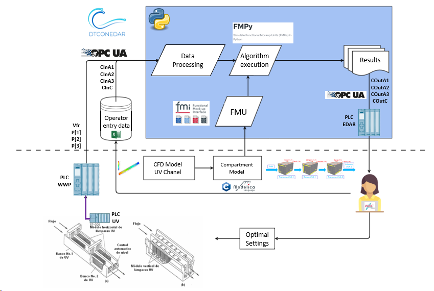
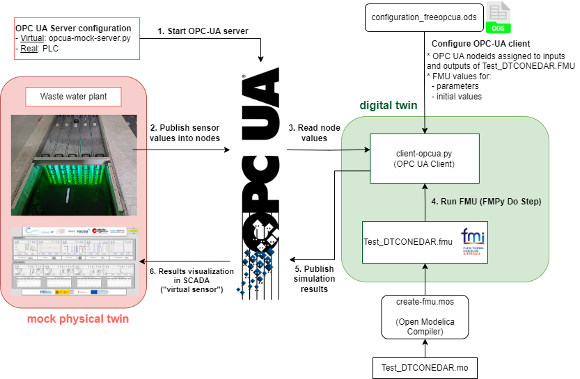
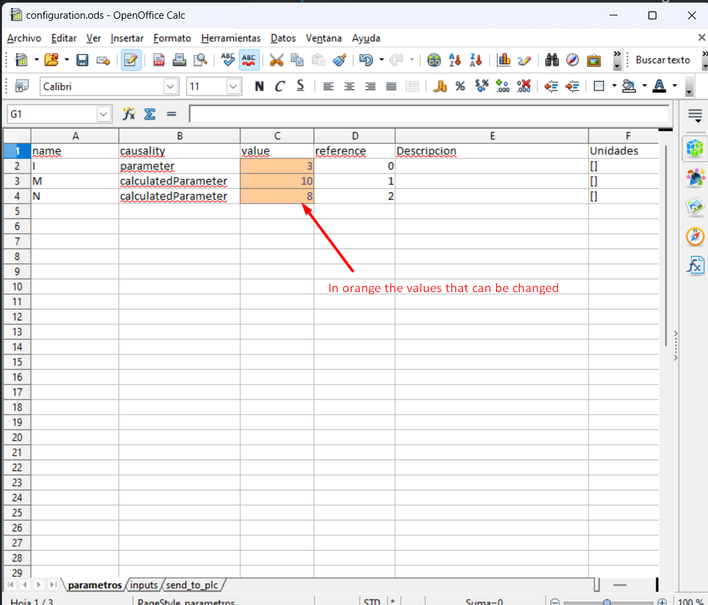
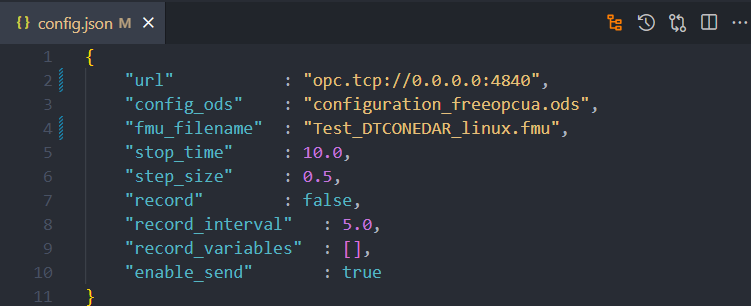

Waste Water Plant with OPC-UA
Introduction
Waste water treatment (WWT) plants must comply with substance and species concentration limits established by regulation in order to ensure the good quality of the water. This is usually done taking periodic samples that are analyzed in the laboratory. This means that plant operators do not have continuous information for making decisions and, therefore, operation setpoints are set to higher values than needed to guarantee water quality. Some of the processes involved in WWT plants consume a lot of power, thus adjusting setpoints could significantly reduce energy consumption.
Physical Twin Overview
This example demonstrates the communication between a physical ultraviolet (UV) disinfection process (the tertiary treatment of a WWT plant) and its digital twin, which is based on Computational Fluid Dynamics (CFD) and compartment models. The aim of this digital twin is to develop "virtual sensors" that provide continuous information that facilitates the decision making process for the plant operator.

The physical twin of the waste water plant is composed of an ultraviolet channel controlled by a PLC that controls the power of the UV lamps needed to kill all the pathogens of the flow. The channel has 3 groups of UV lamps, therefore the real channel (and is mathematical model) is subdivided into 7 zones: 4 correspond to zones without UV lamps (2 for the entrance and exit of the channel + 2 zones between UV lamps) and the 3 reamaining for the UV lamps.
The dose to be applied (related with the power) changes according to the residence time (computed from the measure of the volume flow) and the UV intensity (measured by the intensity sensor).
The information of the volumetric flow and power (in the three parts of the channel) is transmitted to the PLC of the plant. Furthermore, the PLC is working as OPC UA Server to send and receive data to and from an OPC UA Client. Additionally, some sizing parameters and initial values are read from a spreadsheet filled in by the plant operator. In this case, the spreadsheet is an Open Office file (.ods) due to the software installed in the SCADA PC. Some of the variables like initial concentration of disinfectant and pathogens are included, among others. Some values defined by the plant operator correspond to input signals that are not currently being measured, but are expected to be measured in the future.
Digital Twin Overview

The digital twin is a reduced model (developed in C) that solves physical conservation laws (mass, energy and momentum), but simplifies details (geometry, mainly) to ensure real-time calculations and accurate results. The results are compared to the ones obtained by the CFD. C solver developed is used by the OpenModelica model. OpenModelica converts it into the FMI standard, to be integrated in the OPC UA Client (client-opcua.py).

Digital Twin Configuration
| Asset Type | Name of Asset | Visibility | Reuse in Other Examples |
|---|---|---|---|
| Model | Test_DTCONEDAR.mo | private | No |
| Data | configuration_freopcua.ods | private | No |
| model_description.csv (generated by client-asyncua.py) | private | No | |
| Mock OPC UA Server: opcua-mock-server.py | private | No | |
| Tool | OPC UA Client: client-opcua.py | private | No |
| FMU builder: create-fmu.mos | private | No |
In this example, a dummy model representation of the plant
is used, instead of the real model. The simplified model (with not
the real equations) is developed in Open Modelica
(Test_DTCONEDAR.mo). The FMU is generated from the Open Modelica interface
to obtain the needed binaries to run the FMU. It is possible to run an FMU
previously generated, however, to ensure that we are using the right binaries
it is recommended to install Open Modelica Compiler and run script.mos
to build the FMU from the Modelica file Test_DTCONEDAR.mo.
The FMU model description file (modelDescription.xml file inside
Test_DTCONEDAR.fmu) has the information of the value references
configuration_freeopcua.ods has the information of the OPC-UA node IDs
And both have in common the variable name
The client python script (client-opcua.py) does the following actions:
- Reads the variable names and the variable value references from the model description file of the Test_DTCONEDAR.FMU.
- Reads configuration_freeopcua.ods to obtain opcua node IDs and assigns those node IDs to the variables read from the FMU
- Read configuration_freeopcua.ods to fix initial values, parameters and some inputs (those inputs that are not being measured, a reasonable value is assumed).
- Read values from PLC using a client OPC.
-
Execute the algorithm with the FMPy library using the .fmu created from the compartment model (based on CFD)
-
Obtain results.
- Send by OPC UA protocol the result values to the PLC, to visualize them in the SCADA and with the aim to improve the decision-making process of the plant operator.
Input Data Variables
The configuration_freeopcua.ods date file is used for customizing the initial input data values used by the server.


DT Config
The config.json specifies the configuration parameters for the OPC UA client.

Optional parameters can be modified:
- stop_time
- step_size
- record = True, if we want to save the results of the simulation
- record_interval. Sometimes the simulation step_size is small and a the size of the results file can be too big. For instance, if the simulation step_size is 0.01 seconds, we can increase the record_interval so as to reduce the result file size.
- record_variables: we can specify the list of variables that we want to record.
- enable_send = True, if we want to send results to the OPC UA Server.
Lifecycle Phases
The lifecycles that are covered include:
| Lifecycle Phase | Completed Tasks |
|---|---|
| Install | Installs Open Modelica, Python 3.10 and the required pip dependencies |
| Create | Create FMU from Open Modelica file |
| Execute | Run OPC UA mock server and normal OPC-UA client |
| Clean | Delete the temporary files |
Run the example
To run the example, change your present directory.
If required, change the execute permission of lifecycle scripts.
Now, run the following scripts:
Install
Installs Open Modelica, Python 3.10 and the required pip dependencies
Create
Create Test_DTCONEDAR.fmu co-simulation model from `Test_DTCONEDAR.mo
open modelica file.
Execute
Start the mock OPC UA server in the background. Run the OPC UA client.
Clean
Remove the temporary files created by Open Modelica and output files generated by OPC UA client.
References
More explanation about this example is available at:
Acknowledgements
The work on this example was done in a project subsidised thanks to the support grants for Agrupación Empresarial Innovadora (AEI) of the Ministry of Industry, Trade and Tourism (MINCOTUR) with the aim of improving the competitiveness of small and medium-sized enterprises within the Recovery, Transformation and Resilience Plan (PRTR) financed by the Next Generation EU (NGEU) funds, with Grant Number: AEI-010500-2022b-196.